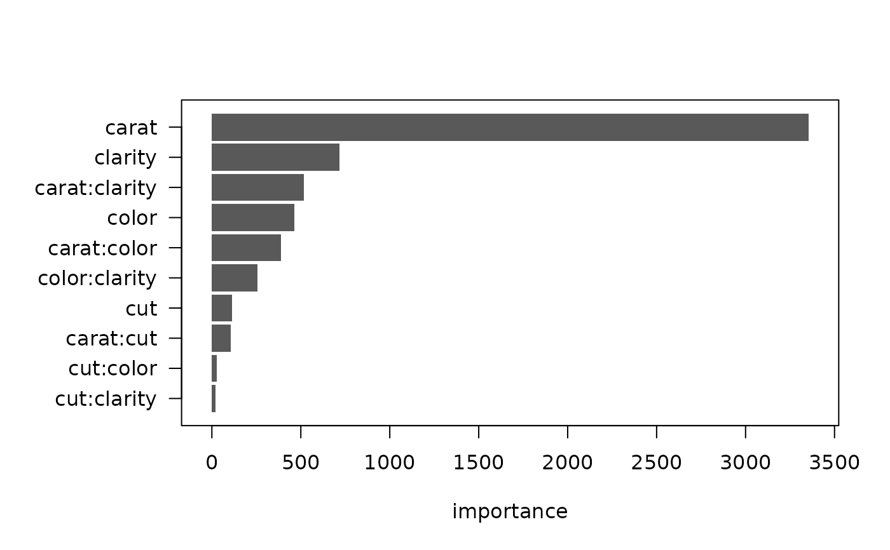
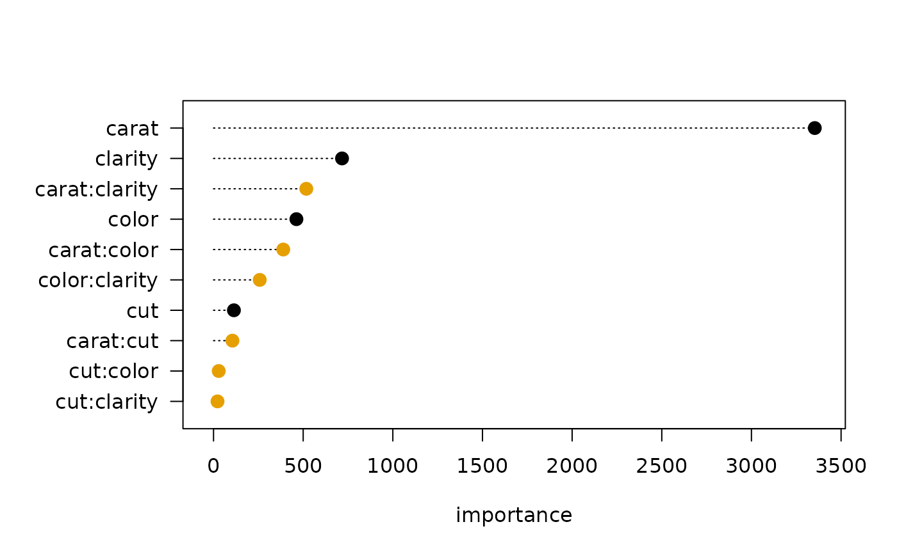
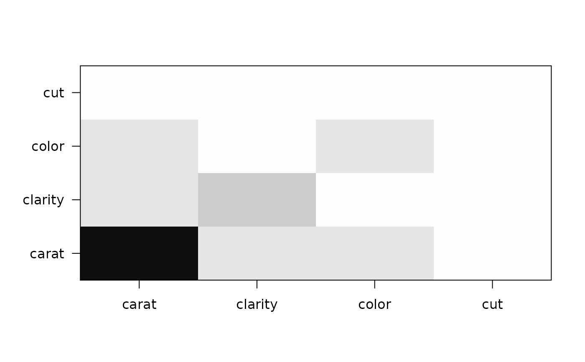
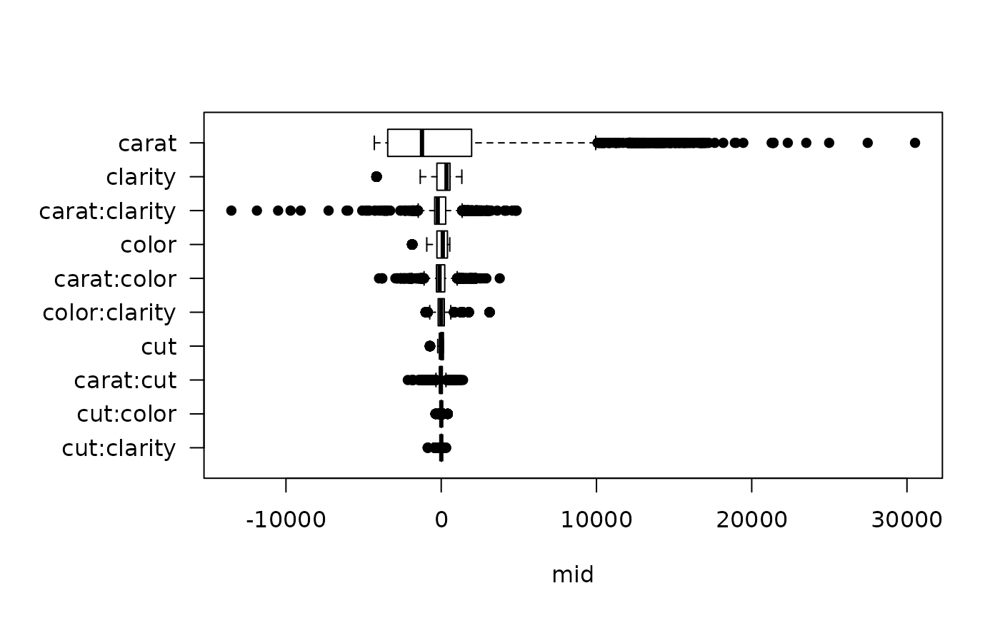

For "mid.importance" objects, plot() visualizes the importance of MID component functions.
Arguments
- x
a "mid.importance" object to be visualized.
- type
a character string specifying the type of the plot. One of "barplot", "heatmap", "dotchart" or "boxplot".
- theme
a character string specifying the color theme or any item that can be used to define "color.theme" object.
- max.bars
an integer specifying the maximum number of bars in the barplot, boxplot and dotchart.
- ...
optional parameters to be passed to the graphing function. Possible arguments are "col", "fill", "pch", "cex", "lty", "lwd" and aliases of them.
Details
The S3 method of plot() for "mid.importance" objects creates a visualization of the MID importance using the functions of the graphics package.
Examples
data(diamonds, package = "ggplot2")
set.seed(42)
idx <- sample(nrow(diamonds), 1e4)
mid <- interpret(price ~ (carat + cut + color + clarity)^2, diamonds[idx, ])
#> 'model' is not passed: the response variable in the data is used
imp <- mid.importance(mid)
plot(imp, theme = "Tableau 10")

plot(imp, type = "dotchart", theme = "Okabe-Ito")

plot(imp, type = "heatmap", theme = "Blues")

plot(imp, type = "boxplot", theme = "Accent")
